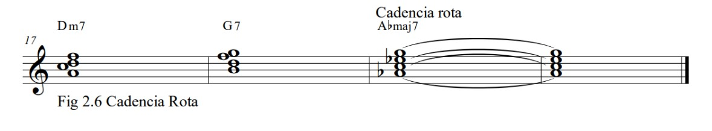

Arreglos Musicales
Cadencias
Los movimientos de acorde a acorde en lugares importantes de una frase musical se llaman cadencias. Las cadencias llevan el impulso musical. Es útil pensar en ellas como "nodos" de energía musical que conducen a puntos de descanso en la frase musical. En un nivel simple, las frases de una canción son como los chistes contados por un comediante de stand-up. A medida que el comediante pasa de un chiste a otro, la cadencia es como el punto de preparación justo antes de cada remate. Así como los grandes comediantes practican su sincronización, la ubicación exacta de una cadencia musical requiere coordinación con la línea melódica y un sentido desarrollado del ritmo armónico. Afortunadamente, el oyente promedio tiene una sensación intuitiva de la colocación de cadencias por la larga exposición a las convenciones de la música pop. (Para explorar estas ideas en más detalle, consulta Melody in Songwriting: Tools and Techniques for Writing Hit Songs de Jack Perricone, Berklee Press.) La definición tradicional de cadencia enfatiza la resolución de los tonos de tendencia 4 a 3 y 7 a 1. Mi definición es algo no tradicional, pero sirve para nuestros propósitos en el contexto de desarrollar opciones de rearmonización.
Las cadencias vienen en varios sabores: fuertes, débiles y engañosas. Las cadencias fuertes y débiles juegan un papel significativo en la técnica de enfoque diatónico y se discutirán en los ejemplos siguientes. Aunque las cadencias engañosas no juegan ningún papel en la técnica de enfoque diatónico, se mencionan aquí porque son importantes para las técnicas presentadas en los capítulos posteriores.
Cadencias fuertes
Las cadencias fuertes producen una sensación dramática de resolución hacia un acorde objetivo. Generan un contraste marcado y a menudo se utilizan para acercarse a los acordes objetivo al final de las frases. Las cadencias fuertes se crean cuando el acorde de aproximación (el acorde inmediatamente anterior al objetivo) y el acorde objetivo comparten no más de dos tonos. La regla general es: cadencias fuertes = pocos tonos comunes entre el acorde de cadencia y su objetivo. El número de tonos comunes entre los acordes está asociado con el movimiento de la raíz entre ellos. Los acordes diatónicos cuyas raíces están a una tercera o una sexta de distancia tienen muchos tonos comunes. Los acordes diatónicos cuyas raíces no están a una tercera o una sexta de distancia tienen menos tonos comunes. Por ejemplo, hay dos notas en FMaj7 que no se encuentran en CMaj7: F y A. Estas dos notas resultan en un contraste distintivo entre los dos acordes. En consecuencia, la cadencia de FMaj7 a CMaj7 es fuerte.
A menudo, se utiliza una cadencia fuerte para acercarse a un acorde objetivo. La elección del acorde de aproximación diatónico depende de la relación de la nota de la melodía con el acorde y del movimiento de la raíz del acorde de aproximación hacia el objetivo. Para mantener un sonido diatónico, la nota melódica del acorde de aproximación debe ser un tono del acorde: 1, 3, 5 o 7. La figura 2.4 muestra FMaj7 con una A en la melodía que se mueve hacia el acorde objetivo. La relación entre la melodía y la armonía es una tercera, y las notas del acorde y la melodía son diatónicas. Además, el movimiento de la raíz entre FMaj7 y CMaj7 es una cuarta perfecta, lo que asegura que al menos dos tonos diferentes se escucharán durante la cadencia. Por lo tanto, Fmaj7 es una buena elección como acorde de aproximación diatónica hacia CMaj7.
Cadencias débiles
Las cadencias débiles, también llamadas cadencias suaves, se producen cuando el acorde de aproximación y el acorde objetivo tienen tres o más notas en común. Debido a que los tonos del acorde son tan similares, las cadencias débiles producen un cambio sutil en el flujo de la progresión. Las cadencias débiles a veces se encuentran en los finales de las frases, pero pueden encontrarse con mayor frecuencia al principio o en las secciones intermedias de una frase. Las cadencias débiles ocurren cuando las raíces del acorde de aproximación y del acorde objetivo están a una tercera diatónica o una sexta diatónica de distancia.

Cadencia Rota
Las cadencias rotas se producen cuando un acorde de séptima dominante se mueve de manera inesperada. Por ejemplo, se espera que un acorde V7 se resuelva por una quinta justa hacia I mayor. El movimiento del V7 a cualquier acorde que no sea IMaj7 será "rota".
